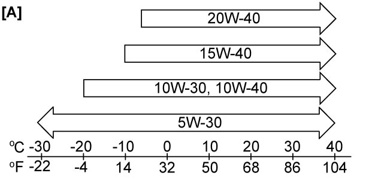

1E
| Engine Oil and Filter Change |
There is an increased risk of severe personal injury or health problems if the procedure described below is performed without taking proper precautions.
•Engine oil has an adverse health effect. Read and understand the instructions in General Precautions and follow all the instructions.
•Check that the engine is not running when performing Step 1) – 12) of the procedure.
•Adequately ventilate the working area when starting the engine in Step 13).
•Check that the engine is not running when performing Step 1) – 12) of the procedure.
•Adequately ventilate the working area when starting the engine in Step 13).
Before draining engine oil, check engine for oil leakage.
If any evidence of leakage is found, correct defective part before proceeding to the following procedure.
1)Remove oil filler cap and oil level gauge from engine.
2)Hoist vehicle and remove engine undercover.
3)Drain engine oil by removing drain plug (1).
4)Wipe drain plug and its mounting surface.
5)Replace gasket with new one.
6)Reinstall drain plug and tighten it to specified torque.

 "Expand image")
 "Expand image")
8)Wipe oil filter mounting surface of oil pan clean.
9)Apply engine oil to new oil filter gasket.
 "Expand image")
10)Install the oil filter according to the following procedure.
Using a torque wrench
Not using a torque wrench
Using a torque wrench
a)Fit the oil filter (1) to the oil pan, and then tighten it to specified torque using the special tool.
 "Expand image")
a)Tighten the oil filter (1) by hand until its gasket touches the oil pan.
b)Using the special tool, rotate the oil filter a three-quarter turn (2) to tighten it.
 "Expand image")
11)Add oil until oil level is brought to FULL level mark (hole) on oil level gauge (oil pan and oil filter capacity). It is recommended to use engine oil of SG, SH, SJ, SL or SM grade. Select appropriate oil viscosity according to engine oil viscosity chart [A] below.
SAE 5W-30 oil is the best choice for good fuel economy and good starting in cold weather.
SAE 5W-30 oil is the best choice for good fuel economy and good starting in cold weather.
NOTE:
•Note that actual amount of oil required during oil change may somewhat differ from that indicated below depending on such factors as temperature, viscosity, etc.
•Engine oil specification and viscosity chart [A] indicated in this manual are typical ones.
For the specific information on the engine oil and proper engine oil viscosity, refer to “Engine Oil and Filter” section of the Owner's Manual.
•Engine oil specification and viscosity chart [A] indicated in this manual are typical ones.
For the specific information on the engine oil and proper engine oil viscosity, refer to “Engine Oil and Filter” section of the Owner's Manual.
Engine oil specification
Oil pan capacity:
About 3.1 liters (6.55 / 5.46 US / Imp pt.)
Oil filter capacity:
About 0.2 liter (0.42 / 0.35 US / Imp pt.)
Others:
About 0.6 liter (1.27 / 1.06 US / Imp pt.)
Total:
About 3.9 liters (8.24 / 6.86 US / Imp pt.)

 "Expand image")
12)Install oil filler cap and oil level gauge to engine.
13)Start engine and run it for 5 minutes. Stop it and wait for 5 minutes before checking oil level. Add oil, if necessary, to bring oil level to FULL level mark (hole) (1) on oil level gauge.

 "Expand image")
| 2. | LOW level mark (hole) |
14)Check oil filter and drain plug for oil leakage.
15)Install engine undercover.
16)For market code P02, P22 and P54, after replacing engine oil and filter, reset cumulative distance and period of oil change request light referring to Combination Meter Description.